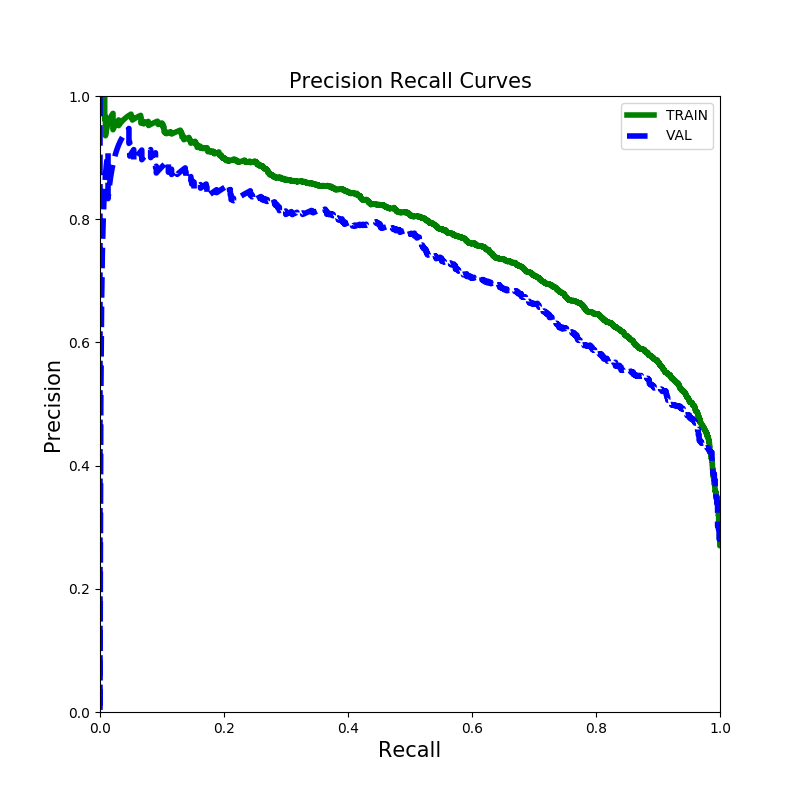
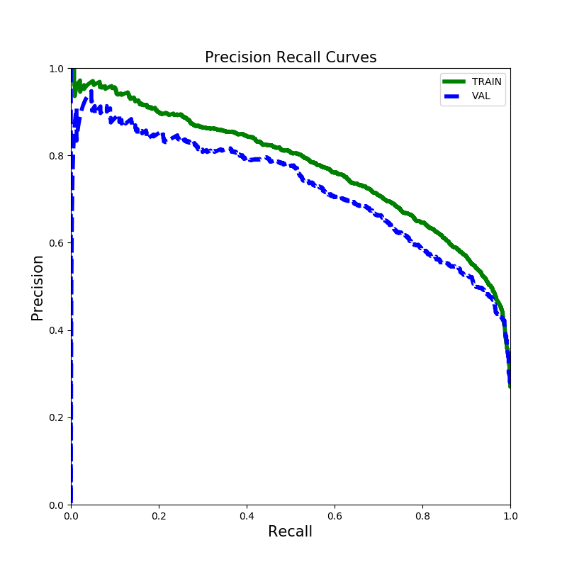

Overview¶
There are two main use cases of the gqcnn package:
Training a Dex-Net 4.0 GQ-CNN model on an offline Dex-Net dataset of point clouds, grasps, and grasp success metrics, and then grasp planning on RGBD images.
Grasp Planning on RGBD images using a pre-trained Dex-Net 4.0 GQ-CNN model.
Click on the links or scroll down to get started!
Prerequisites¶
Before running the tutorials please download the example models and datasets:
$ cd /path/to/your/gqcnn
$ ./scripts/downloads/download_example_data.sh
$ ./scripts/downloads/models/download_models.sh
Running Python Scripts¶
All gqcnn Python scripts are designed to be run from the top-level directory of your gqcnn repo by default. This is because every script takes in a YAML file specifying parameters for the script, and this YAML file is stored relative to the repository root directory.
We recommend that you run all scripts using this paradigm:
cd /path/to/your/gqcnn
python /path/to/script.py
Training¶
The gqcnn package can be used to train a Dex-Net 4.0 GQ-CNN model on a custom offline Dex-Net dataset. Because training from scratch can be time-consuming, the most efficient way to train a new network is to fine-tune the weights of a pre-trained Dex-Net 4.0 GQ-CNN model, which has already been trained on millions of images.
To fine-tune a GQ-CNN run:
$ python tools/finetune.py <training_dataset_path> <pretrained_network_name> --config_filename <config_filename> --name <model_name>
The args are:
training_dataset_path: Path to the training dataset.
pretrained_network_name: Name of pre-trained GQ-CNN.
config_filename: Name of the config file to use.
model_name: Name for the model.
To train a GQ-CNN for a parallel jaw gripper on a sample dataset, run the fine-tuning script:
$ python tools/finetune.py data/training/example_pj/ GQCNN-4.0-PJ --config_filename cfg/finetune_example_pj.yaml --name gqcnn_example_pj
To train a GQ-CNN for a suction gripper run:
$ python tools/finetune.py data/training/example_suction/ GQCNN-4.0-SUCTION --config_filename cfg/finetune_example_suction.yaml --name gqcnn_example_suction
Visualizing Training¶
The gqcnn model contains support for visualizing training progress through Tensorboard. Tensorboard is automatically launched when the training script is run and can be accessed by navigating to localhost:6006 in a web browser. There you will find something like the following:

Which displays useful training statistics such as validation error, minibatch loss, and learning rate.
The Tensorflow summaries are stored in models/<model_name>/tensorboard_summaries/.
Analysis¶
It is helpful to check the training and validation loss and classification errors to ensure that the network has trained successfully. To analyze the performance of a trained GQ-CNN, run:
$ python tools/analyze_gqcnn_performance.py <model_name>
The args are:
model_name: Name of a trained model.
The script will store a detailed analysis in analysis/<model_name>/.
To analyze the networks we just trained, run:
$ python tools/analyze_gqcnn_performance.py gqcnn_example_pj
$ python tools/analyze_gqcnn_performance.py gqcnn_example_suction
Below is the expected output for the parallel jaw network. Please keep in mind that the exact performance values may change due to randomization in the training dataset and random weight initialization:
$ GQCNNAnalyzer INFO TRAIN
$ GQCNNAnalyzer INFO Original error: 36.812
$ GQCNNAnalyzer INFO Final error: 6.061
$ GQCNNAnalyzer INFO Orig loss: 0.763
$ GQCNNAnalyzer INFO Final loss: 0.248
$ GQCNNAnalyzer INFO VAL
$ GQCNNAnalyzer INFO Original error: 32.212
$ GQCNNAnalyzer INFO Final error: 7.509
$ GQCNNAnalyzer INFO Normalized error: 0.233
A set of plots will be saved to analysis/gqcnn_example_pj/. The plots training_error_rates.png and precision_recall.png should look like the following:
 

{kind=link}
Here is the expected output for the suction network:
$ GQCNNAnalyzer INFO TRAIN
$ GQCNNAnalyzer INFO Original error: 17.844
$ GQCNNAnalyzer INFO Final error: 6.417
$ GQCNNAnalyzer INFO Orig loss: 0.476
$ GQCNNAnalyzer INFO Final loss: 0.189
$ GQCNNAnalyzer INFO VAL
$ GQCNNAnalyzer INFO Original error: 18.036
$ GQCNNAnalyzer INFO Final error: 6.907
$ GQCNNAnalyzer INFO Normalized error: 0.383
A set of plots will be saved to analysis/gqcnn_example_suction/. The plots training_error_rates.png and precision_recall.png should look like the following:


Grasp Planning¶
Grasp planning involves searching for the grasp with the highest predicted probability of success given a point cloud. In the gqcnn package this is implemented as policies that map an RGBD image to a 6-DOF grasping pose by maximizing the output of a GQ-CNN. The maximization can be implemented with iterative methods such as the Cross Entropy Method (CEM), which is used in Dex-Net 2.0, Dex-Net 2.1, Dex-Net 3.0, Dex-Net 4.0, or much faster fully convolutional networks, which are used in the FC-GQ-CNN.
We provide example policies in examples/. In particular, we provide both an example Python policy and an example ROS policy. Note that the ROS policy requires the ROS gqcnn installation, which can be found here. We highly recommend using the Python policy unless you need to plan grasps on a physical robot using ROS.
Sample Inputs¶
Sample inputs from our experimental setup are provided with the repo:
data/examples/clutter/phoxi/dex-net_4.0: Set of example images from a PhotoNeo PhoXi S containing objects used in Dex-Net 4.0 experiments arranged in heaps.
data/examples/clutter/phoxi/fcgqcnn: Set of example images from a PhotoNeo PhoXi S containing objects in FC-GQ-CNN experiments arranged in heaps.
data/examples/single_object/primesense/: Set of example images from a Primesense Carmine containing objects used in Dex-Net 2.0 experiments in singulation.
data/examples/clutter/primesense/: Set of example images from a Primesense Carmine containing objects used in Dex-Net 2.1 experiments arranged in heaps.
**Note that when trying these sample inputs, you must make sure that the GQ-CNN model you are using was trained for the corresponding camera and input type (singulation/clutter). See the following section for more details.**
Pre-trained Models¶
Pre-trained parallel jaw and suction models for Dex-Net 4.0 are automatically downloaded with the gqcnn package installation. If you do wish to try out models for older results (or for our experimental FC-GQ-CNN), all pre-trained models can be downloaded with:
$ ./scripts/downloads/models/download_models.sh
The models are:
GQCNN-2.0: For Dex-Net 2.0, trained on images of objects in singulation with parameters for a Primesense Carmine.
GQCNN-2.1: For Dex-Net 2.1, a Dex-Net 2.0 model fine-tuned on images of objects in clutter with parameters for a Primesense Carmine.
GQCNN-3.0: For Dex-Net 3.0, trained on images of objects in clutter with parameters for a Primesense Carmine.
GQCNN-4.0-PJ: For Dex-Net 4.0, trained on images of objects in clutter with parameters for a PhotoNeo PhoXi S.
GQCNN-4.0-SUCTION: For Dex-Net 4.0, trained on images of objects in clutter with parameters for a PhotoNeo PhoXi S.
FC-GQCNN-4.0-PJ: For FC-GQ-CNN, trained on images of objects in clutter with parameters for a PhotoNeo PhoXi S.
FC-GQCNN-4.0-SUCTION: For FC-GQ-CNN, trained on images of objects in clutter with parameters for a PhotoNeo PhoXi S.
**Note that GQ-CNN models are sensitive to the parameters used during dataset generation, specifically 1) Gripper geometry, an ABB YuMi Parallel Jaw Gripper for all our pre-trained models 2) Camera intrinsics, either a Primesense Carmine or PhotoNeo Phoxi S for all our pre-trained models (see above for which one) 3) Distance between camera and workspace during rendering, 50-70cm for all our pre-trained models. Thus we cannot guarantee performance of our pre-trained models on other physical setups. If you have a specific use-case in mind, please reach out to us.** We are actively researching how to generate more robust datasets that can generalize across robots, cameras, and viewpoints!
Python Policy¶
The example Python policy can be queried on saved images using:
$ python examples/policy.py <model_name> --depth_image <depth_image_filename> --segmask <segmask_filename> --camera_intr <camera_intr_filename>
The args are:
model_name: Name of the GQ-CNN model to use.
depth_image_filename: Path to a depth image (float array in .npy format).
segmask_filename: Path to an object segmentation mask (binary image in .png format).
camera_intr_filename: Path to a camera intrinsics file (.intr file generated with BerkeleyAutomation’s perception package).
To evaluate the pre-trained Dex-Net 4.0 parallel jaw network on sample images of objects in heaps run:
$ python examples/policy.py GQCNN-4.0-PJ --depth_image data/examples/clutter/phoxi/dex-net_4.0/depth_0.npy --segmask data/examples/clutter/phoxi/dex-net_4.0/segmask_0.png --camera_intr data/calib/phoxi/phoxi.intr
To evaluate the pre-trained Dex-Net 4.0 suction network on sample images of objects in heaps run:
$ python examples/policy.py GQCNN-4.0-SUCTION --depth_image data/examples/clutter/phoxi/dex-net_4.0/depth_0.npy --segmask data/examples/clutter/phoxi/dex-net_4.0/segmask_0.png --camera_intr data/calib/phoxi/phoxi.intr
ROS Policy¶
First start the grasp planning service:
$ roslaunch gqcnn grasp_planning_service.launch model_name:=<model_name>
The args are:
model_name: Name of the GQ-CNN model to use. Default is GQCNN-4.0-PJ.
model_dir: Path to the directory where the GQ-CNN models are located. Default is models/. If you are using the provided download_models.sh script, you shouldn’t have to modify this.
To start the grasp planning service with the pre-trained Dex-Net 4.0 parallel jaw network run:
$ roslaunch gqcnn grasp_planning_service.launch model_name:=GQCNN-4.0-PJ
To start the grasp planning service with the pre-trained Dex-Net 4.0 suction network run:
$ roslaunch gqcnn grasp_planning_service.launch model_name:=GQCNN-4.0-SUCTION
The example ROS policy can then be queried on saved images using:
$ python examples/policy_ros.py --depth_image <depth_image_filename> --segmask <segmask_filename> --camera_intr <camera_intr_filename>
The args are:
depth_image_filename: Path to a depth image (float array in .npy format).
segmask_filename: Path to an object segmentation mask (binary image in .png format).
camera_intr_filename: Path to a camera intrinsics file (.intr file generated with BerkeleyAutomation’s perception package).
To query the policy on sample images of objects in heaps run:
$ python examples/policy_ros.py --depth_image data/examples/clutter/phoxi/dex-net_4.0/depth_0.npy --segmask data/examples/clutter/phoxi/dex-net_4.0/segmask_0.png --camera_intr data/calib/phoxi/phoxi.intr
Usage on a Physical Robot with ROS¶
To run the GQ-CNN on a physical robot with ROS, you will want to implement your own ROS node to query the grasp planning service similar to what examples/policy_ros.py does. If you are interested in replicating this functionality on your own robot, please contact Jeff Mahler (jmahler@berkeley.edu) with the subject line: “Interested in GQ-CNN ROS Service”.
FC-GQ-CNN Policy¶
Our most recent research result, the FC-GQ-CNN, combines novel fully convolutional network architectures with our prior work on GQ-CNNs to increase policy rate and reliability. Instead of relying on the Cross Entropy Method (CEM) to iteratively search over the policy action space for the best grasp, the FC-GQ-CNN instead densely and efficiently evaluates the entire action space in parallel. It is thus able to consider 5000x more grasps in 0.625s, resulting in a MPPH (Mean Picks Per Hour) of 296, compared to the prior 250 MPPH of Dex-Net 4.0.

FC-GQ-CNN architecture.¶
You can download the pre-trained FC-GQ-CNN parallel jaw and suction models along with the other pre-trained models:
$ ./scripts/downloads/models/download_models.sh
Then run the Python policy with the --fully_conv flag.
To evaluate the pre-trained FC-GQ-CNN parallel jaw network on sample images of objects in heaps run:
$ python examples/policy.py FC-GQCNN-4.0-PJ --fully_conv --depth_image data/examples/clutter/phoxi/fcgqcnn/depth_0.npy --segmask data/examples/clutter/phoxi/fcgqcnn/segmask_0.png --camera_intr data/calib/phoxi/phoxi.intr
To evaluate the pre-trained FC-GQ-CNN suction network on sample images of objects in heaps run:
$ python examples/policy.py FC-GQCNN-4.0-SUCTION --fully_conv --depth_image data/examples/clutter/phoxi/fcgqcnn/depth_0.npy --segmask data/examples/clutter/phoxi/fcgqcnn/segmask_0.png --camera_intr data/calib/phoxi/phoxi.intr
With ROS¶
Review the section on using the normal ROS policy first, which can be found here.
Add the additional arg fully_conv:=True when launching the grasp planning service and provide the corresponding network (FC-GQCNN-4.0-PJ for parallel jaw and FC-GQCNN-4.0-SUCTION for suction).
If you wish to test on inputs other than those provided in data/examples/clutter/phoxi/fcgqcnn/, you will need to edit the input height and width configuration in the appropriate cfg/examples/<fc_gqcnn_pj.yaml or fc_gqcnn_suction.yaml> under [“policy”][“metric”][“fully_conv_gqcnn_config”].